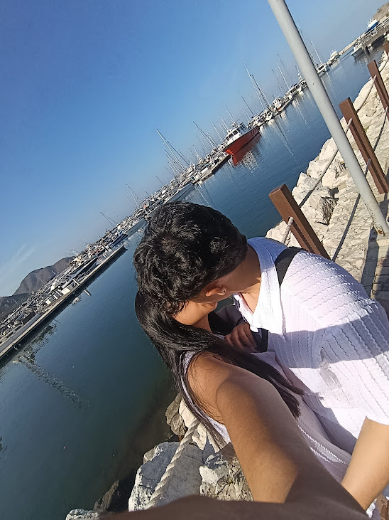
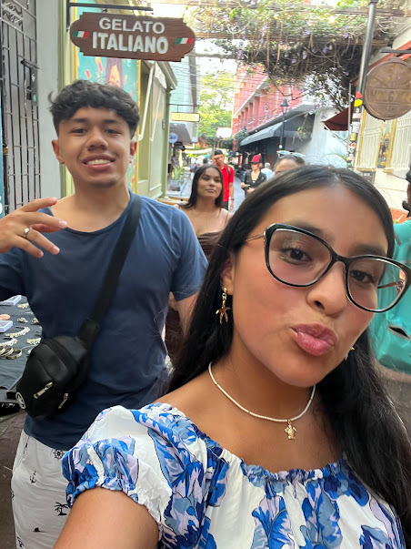
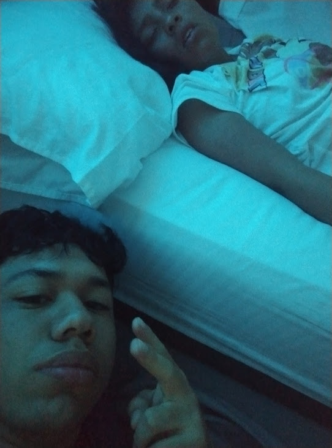
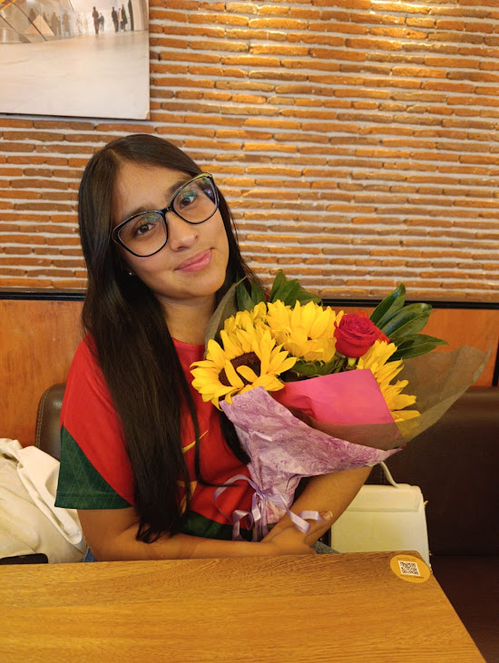

De: Adrian el guapo
Para: Danna la mona

Algunas historias no se planean, simplemente ocurren. Es el arte de coincidir, cuando el amor nace en la primera mirada. Es cuando veo que las conexiones verdaderas existen, lo entendi desde el primer momento que te vi, la mejor decision que he tomado, fue enamorarme de ti. con una sola mirada...
En ocaciones olvido , lo lindo que era ser niños
En este momento recuerdo el sentimiento tan lindo que se siente cuando te hago un detalle , este sentimiento no percibía desde hace demasiado tiempo , cuando hago algo dedicado a ti , comienzo y no quiero parar , no encuentro espacio suficiente para expresar lo que siento , me siento como un niño pequeño , como el niño que conociste en un salon de clase , el niño que trataba de consolar a una bella niña con un termo con jugo.
Aun me cuesta aceptar que ya eso quedo atrás , que ya somos personas adultas que día a día tiene que luchar por su futuro. Por nuestro futuro , por querer hacer cosas para complacer nuestros sueños de niños , por querer devorarnos el mundo juntos , eran las ideas que teníamos cuándo éramos mas pequeñitos , crecimos , las ideas son las mismas pero poco a poco hemos entendido de que no sera fácil , toca esforzamos.
Aun me gastaría que fueran tiempos pasados , aun me gastaría ser un niño pequeño sin preocupaciones , pero eso ya se acabo , me pesa la nostalgia , ver que ya somos grande , y cuando revivo esos momentos a través de fotos y videos que quedaron en el paso , veo que muchas cosas han cambiado.
Pero ahi alguien que aun esta ahi , ahi una personita , que en todos los recuerdos , siempre está , y siempre esta en los recuerdos mas felices , esa personita eres tu mi vida , Danna Camila Aros Riaño , la mujer mas maravillosa del mundo , mi futura esposa y madre de mis hijos , tu eres mi felicidad Danna , tu conviertes un día malo en el mejor día de mi vida , tu eres mi pasado , eres mi presente y espero siempre seas mi futuro , te pido perdón por no hacer estos detalles todos los días , tu te mereces mañanas llenas de flores y chocolates todos los días , y un día estas palabras se harán , así como las palabras del pasado se han hecho realidad.
Feliz mes #51 mi niña , te amo 3 millones , y eres tu la que mantienen esta alma de niño pequeño :(❤️

Entonces hice uno listado , espero te guste :) , lo mejor es la foto del final
01. Por que cuando la conoci si se bañaba , despues descubir que me engañaron
02. Porque tu sonrisa tiene la capacidad de cambiar mis días incluso cuando todo parece pesado y dificil.
03. Por que tus ojos cuando los veo me transportan a otra dimensión , me siento intocable a tu lado.
04. Contigo hago cosas que no haria si estuviera solo , me das motivación.
05. Tu actitud , aunque muy dificil de llevar , me enseña mcuhas cosas dia a dia , y cada vez que te pones brava me enamoro más.
05. Porque me enamore de ti Danna Camilo Aros Riaño, Por que te amo con mi alma. Te elijo a ti, por que eres la mujer con la que lo quiero lograr todo, con la que quiero pasar el resto de mis dias y entregarte todo lo que soy y lo que puedo dar.
05. Por que estas buenisimaaaaaa , solo mira lo sexy que te ves en esa foto 😍.


Sabes que te amo con tomo mi corazoncito
Prometo estar siempre a tu lado y cuidarte como nadie más
Prometo amarte en cualquier circunstancia y frente a cualquier problema en pareja
Y sobre todo, prometo que dare todo por ti y no te dejare ir sin demostrar todo lo que pueda
Asi que te quiero preguntar y de paso renovamos los votos , si...